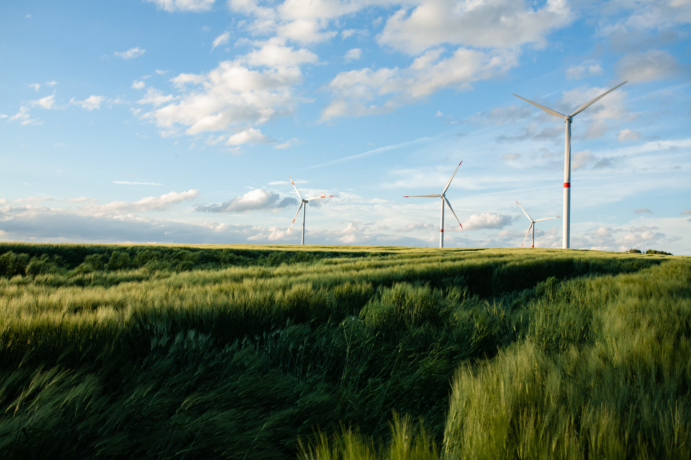

та ESG
Прозорість, відкритість та можливість вимірювати й відстежувати прогрес є ключовими принципами діяльності ТОВ «УЛФ-ФІНАНС» у сфері сталого розвитку та ESG. Компанія відповідально підходить до формування ESG-звітності та розвиває систему збору, аналізу й розкриття нефінансової інформації.
ТОВ «УЛФ-ФІНАНС» перебуває на етапі системної інтеграції ESG-підходів у свою діяльність, зокрема впровадження політик, процедур та інструментів управління екологічними й соціальними ризиками. Це створює основу для подальшого переходу до публічної ESG-звітності відповідно до міжнародних стандартів.
Перший ESG-звіт ТОВ «УЛФ-ФІНАНС» планується підготувати та оприлюднити у 2027 році. Звіт охоплюватиме інформацію щодо екологічних, соціальних та управлінських аспектів діяльності Компанії, зокрема підходи до управління ESG-ризиками, вплив на довкілля та суспільство, а також ключові показники ефективності.
Під час підготовки звітності Компанія орієнтується на міжнародні практики та стандарти, зокрема ESRS — European Sustainability Reporting Standards. Це дозволить забезпечити прозорість, порівнюваність даних та відповідність очікуванням фінансових партнерів і зацікавлених сторін.
До моменту підготовки першого ESG-звіту ULF зосереджується на формуванні якісної бази даних, впровадженні процесів збору та верифікації інформації, а також підвищенні внутрішньої спроможності до управління ESG-показниками.
та повідомлення
з ESG-питань
Якщо вам стали відомі факти неналежного
управління
екологічними або соціальними
аспектами, або ви маєте повідомлення про екологічний чи соціальний інцидент,
скористайтеся відповідною формою нижче.
Ми розглянемо надану
інформацію в межах встановлених процедур.
та неналежного управління екологічними й соціальними питаннями.

з екологічних
та соціальних питань